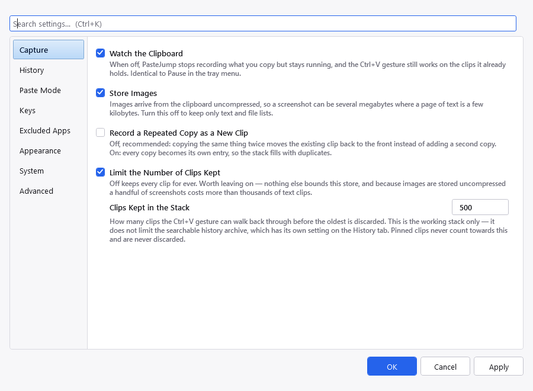
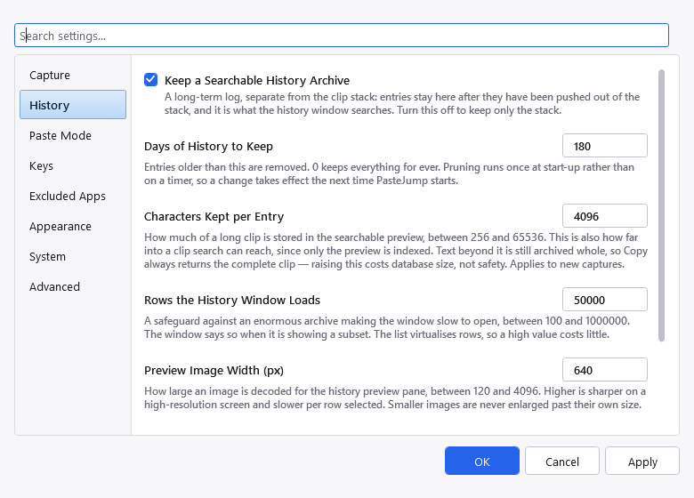
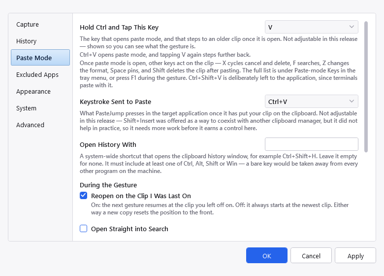
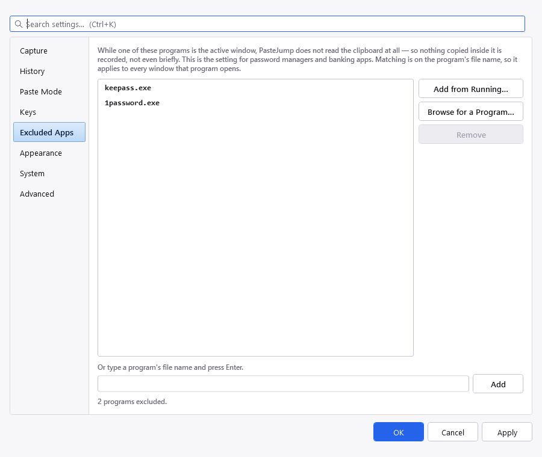
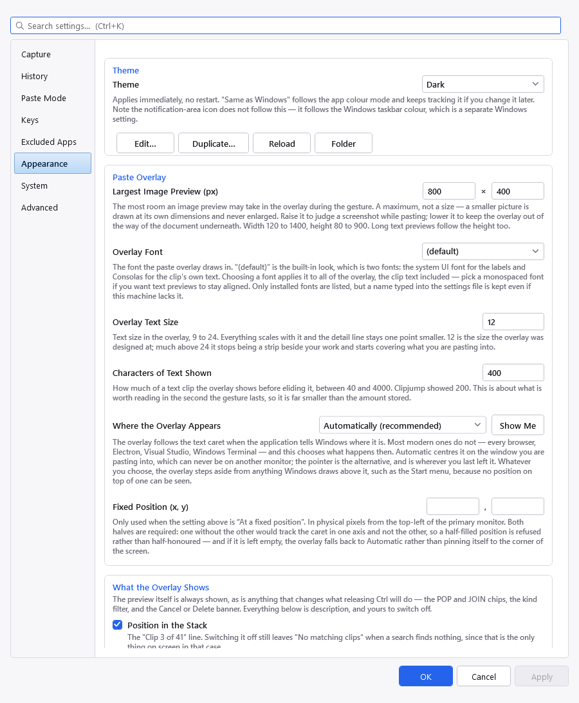
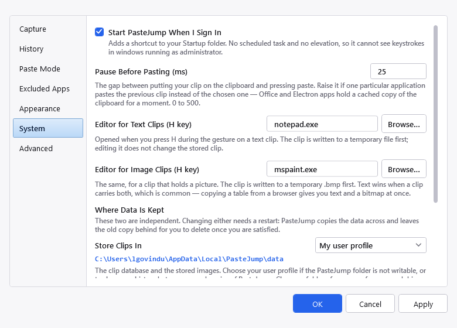
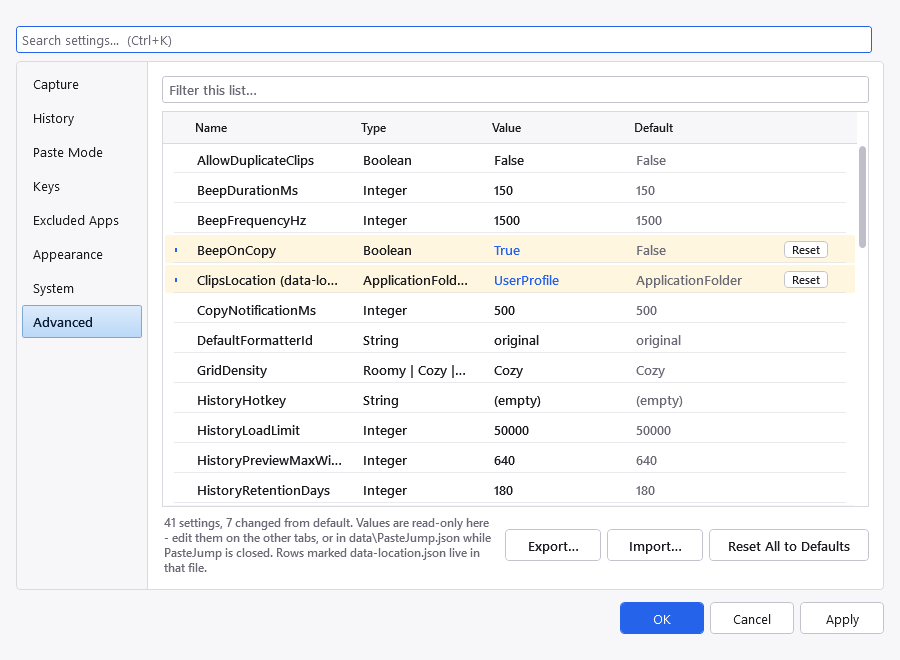

Right-click the tray icon and choose Settings. Apply commits without closing, so a timing value can be nudged and its effect watched; it stays disabled until something actually changes.

Recording, and how many clips the gesture can reach.
| Setting | What it does |
|---|---|
| Watch the Clipboard | Record what you copy at all. Turning this off makes PasteJump inert but resident; the gesture still pastes from clips already held. Same thing as Pause capture on the tray menu. |
| Store Images | Keep images from the clipboard. Off keeps the database small. |
| Record a Repeated Copy as a New Clip | Off — the default — means re-copying something you already have promotes the existing clip to the front instead of adding a second one. |
| Clips Kept in the Stack | How many clips Ctrl+V can
reach. Pinned clips are exempt. The limit can be switched off, but leaving it on is wise: images arrive
uncompressed, so a handful of screenshots costs more than thousands of text clips. |

The archive: how long entries are kept, how much of each one, and the Clipjump import.
| Setting | What it does |
|---|---|
| Keep a Searchable History Archive | Whether to log copies to the archive as well as the stack. |
| Days of History to Keep | Entries older than this are removed. 0
keeps everything for ever. Pruning runs once at start-up rather than on a timer, so a change takes effect
the next time PasteJump starts. |
| Characters Kept per Entry | How much of a long clip goes in the searchable preview. This is also how far into a clip search can reach, since only the preview is indexed. Text beyond it is archived whole either way, so raising it costs database size, not safety. |
| Rows the History Window Loads | A safeguard against an enormous archive making the window slow to open, not a page size. The window says when it is showing a subset. |
| Preview Image Width (px) | How large an image is decoded for the history preview pane. Higher is sharper and slower per row selected. |
| Import Clipjump History | See Importing from Clipjump. |

How the gesture behaves. The two controls at the top are greyed out — they are disabled in this release.
| Setting | What it does |
|---|---|
| Hold Ctrl and Tap This Key (disabled in this release) |
The letter that opens the gesture. Only letters not already bound to a paste-mode action would be offered, because the trigger doubles as "step to an older clip". |
| Keystroke Sent to Paste (disabled in this release) |
What PasteJump sends to make the focused application paste. Not the same setting as the one above: one is what we listen for, the other what we send. Both are greyed out pending more work — see Running alongside another clipboard manager. |
| Warn when another clipboard manager is running | Shows a notification at start-up if a known rival is detected. It is a guess based on process names, and it says so. |
| Open History With | An optional system-wide shortcut for the history window,
for example Ctrl+Shift+H. Empty by default, deliberately: a global
hotkey takes that chord away from every other application on the desktop. |
| Reopen on the Clip I Was Last On | Whether the gesture resumes where it left off rather than starting at the newest clip. A new copy always resets the position regardless. |
| Open Straight into Search | Start the gesture in search mode. |
| Reset the Paste Format on Every Entry | Whether the format goes back to the default each time, instead of remembering the last one used. |
| Default Paste Format | Original, Plain text, Collapse whitespace, Sentence case or Unindent. |

Processes whose copies are never recorded. Browse to one, or pick it from the running windows.
Processes listed here are ignored: while one of them is in the foreground, nothing it copies is recorded. Password managers are the obvious case. Add one by browsing to it, by picking from the list of running windows, or by typing the executable name.

Theme, list density, and everything about the overlay drawn during the gesture.
| Setting | What it does |
|---|---|
| Theme | Light, Dark, or Same as Windows. Applies immediately. Note the tray icon does not follow this — it follows the Windows taskbar colour, which is a separate Windows setting. |
| History List Density | Row spacing in the history window. The same control appears in that window. |
| Largest Image Preview (px) | The most room an image preview may take in the overlay during the gesture. A maximum, not a size: a smaller picture is drawn at its own dimensions and never enlarged. Raise it to judge a screenshot while pasting; lower it to keep the overlay out of the way of the document underneath. |
| Characters of Text Shown | How much of a text clip the overlay shows before eliding it. About what is worth reading in the second the gesture lasts, so it is far smaller than the amount stored. |
| Fixed Position (x, y) | Leave both empty — the default — to have the overlay appear beside the text caret, or beside the pointer where an application does not report one. Fill in both to pin it to one place on screen. One without the other is not accepted, because it would track the caret in one axis and not the other. |
| Show a Brief Notification | A small popup near the cursor confirming a copy was recorded, with its duration below. It never takes focus, and it is suppressed while the paste overlay is open. |
| Beep | A short tone on each capture, with its pitch and length. Useful when the notification is off, or when the copy happened on a monitor you were not looking at. |

Start-up, the paste timing, the external editors, and where the data lives.
| Setting | What it does |
|---|---|
| Start PasteJump When I Sign In | Adds a shortcut to your Startup folder. No scheduled task and no elevation, so it cannot see keystrokes in windows running as administrator. |
| Pause Before Pasting (ms) | The gap between putting a clip on the clipboard and sending the paste keystroke. Raise it if a particular application pastes the previous clip: Office, Electron shells and remote-desktop clients cache the clipboard, and a keystroke arriving too early can be served from that stale cache. |
| Editor for Text Clips / Image Clips | What the H key opens. Two
settings, because Notepad opening a bitmap is useless. |
| Store Clips In | Where the database and the image blobs live. Three choices: the
PasteJump folder (the default, and what keeps a portable copy self-contained), your user profile — move
it there when the program folder is not writable, which unzipping under C:\Program Files is the
usual way to discover — or a folder you choose, for a second drive or somewhere with room for
years of images. Choosing your own folder shows a box and a Browse button; the folder is created and tested
for writing before the change is accepted. |
| Store Settings In | Where PasteJump.json lives. Rarely worth
moving: keeping it beside the program is what lets a portable copy carry its own configuration. |
The two locations are independent, and moving either needs a restart. PasteJump restarts,
copies that half across, and leaves the old copy in place for you to delete. They cannot live in the
settings file, because one of them decides where that file is — they are in
data-location.json beside the executable, along with the folder you chose if you chose one.
A network share is a bad choice for clips. The clip store is a SQLite database: a share that goes offline mid-session fails like any other disconnected file, and two computers pointed at the same folder will corrupt it. PasteJump does not refuse a share — it is your folder — but it cannot make that safe either.

Every setting with the value a fresh install would have. Changed rows are banded and carry a Reset button.
Every setting PasteJump has, with its current value and the value a fresh install would have. Rows that differ from their default are banded and marked, which is the first thing to check when behaviour is surprising. The filter box at the top matches on name or value.
Values are read-only here — edit them on the other tabs, or in PasteJump.json while
PasteJump is closed. Two things can be done from this page:
Neither writes anything until you press OK or Apply, so Cancel still abandons a reset.